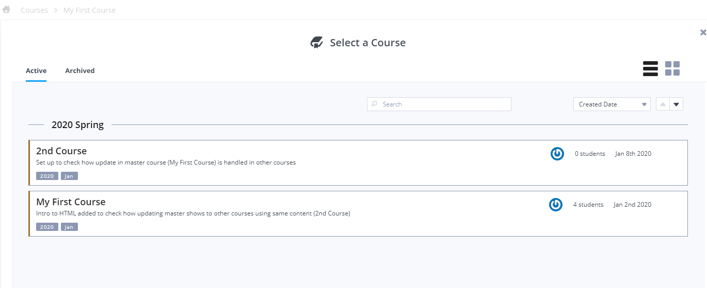
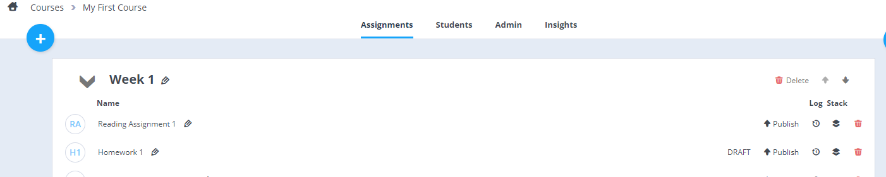

Introduction
The following videos cover project units. Click here if you have authored a Codio book and want to publish an assignment from a part it.
Video - General overview
The following video gives an overview on why you might want to use a course modules rather than projects. It also explains how to create a course.
Video - Ownership and visibility
Please watch the following video to understand how to allow people to find your course and modules and also to administer, edit and assign them to course of student.
You can also read how to control access in the documentation.
Video - Working with stacks in courses
The following video covers the important topic of stack management within a course. Here are some documentation links.
Updating courses and collaboration
If you want to allow other teachers in your organization to modify your course structure and assignment content then it is important to understand how Codio manages this. Please refer to Collaborating on project units for details.
Overview
The most basic way to assign content to students is to create a project and then assign the project to the course. Over time, you may end up with a lot of projects in your project list. Each time you come to teach your course, you will find it harder and harder to locate the right project when you need it.
As a result, you should be familiar with the functionality offered by courses, described below, and books.
A course is a very elegant way of managing and organizing your projects. A course has a very simple hierarchy.
- Course: the course is the top level and contains modules.
- Module: a module is simply a container for your main project assignments. If you have 50 project assignments in your course then you might want to put collections of assignments into distinct, suitably named modules.
- Assignment: an assignment is a Codio project that is some unit of teaching. It is entirely up to you how much material is covered by an assignment. Approaches include putting about a week, a lesson or a lecture's worth of material into a single assignment.
A course assignment typically takes one of two forms.
- Tutorial: in this case you would use the Codio Guides or Codio Books tutorial authoring tools to create your tutorial content. Click here for an overview of the difference.
- Assignment: in this case you create a project assignment where everything is set up for the student to tackle a coding assignment or challenge. You can still use guides or books to give instructions, but with assignments, you expect your students will be coding rather than learning.
The above two cases are not fixed concepts in Codio but are typical use cases. You can do whatever you like with a project.
Working with courses
Working with courses often follows the pattern listed below.
Setup
- Create a new course and name it.
- Create your first module. You need at least one module to hold your assignments. A module is an organizational item and a) contains assignments and b) can be assigned to a course with all its assignments.
Assignment Creation
Either
- Create a new project assignment this gives you a dedicated Codio box and behaves like a regular Codio project.
Or
- Create a new book assignment which maps to a part of a book that has already been created. Unlike project assignments, a book has a single Codio box to work with along with a typically large volume of content.
Please click here for details on how to decide whether to use project assignments or book assignments
First version
This describes the first time you create a new assignment.
- Edit your assignment. If your assignment is a project assignment, clicking the assignment will take you into the IDE, as with a Codio project, where you can work on your project.
- Publish your assignment. When you think your assignment is in good shape, it is ready to publish. A assignment is not available to the course until you publish. At this point a snapshot is taken of the assignment and it forms a part of the published course.
You will iterate through the above process as you add more assignments to your course modules.
Updates TODO
Editing a assignment does not affect published course content or content assigned to course. This section describes how you can push your changes out to courses when you are ready.
- More edits to a assignment. After publishing, you may decide to make further changes. These changes do not form a part of the published course assignment until you republish, so you can edit without concern for altering published content.
- Republish. Having made more changes, you can publish the assignment again in order to make those changes available to the course. However, publishing does not update assignments previously assigned to a course.
- Update course. If you had assigned a course module to a course and subsequently updated and published a assignment within that module, then assignments within that module are not automatically updated in the course. You need to explicitly do this by going to the course. You should see a red Update Course button. This allows you to selectively update assignments.
Stack planning
The following applies to project assignments rather than books. Books require less thought as a book only has one box associated with it and the book assignment will takes its stack setting from the book.
You should be familiar with the concept of a stack before creating content.
Minimize the number of stacks
It is important to think about the stack or stacks that your course uses. You should avoid creating a new stack for each assignment. There are very few cases where this is needed. If you unnecessarily create new stacks for each assignment, you will be be less efficient and waste unnecessary time with stack builds/rebuilds.
You should look to use as few stacks as possible, ideally just one, and use that stack for all assignments. There are perfectly valid exceptions, but this is the rule.
Single stack example
To illustrate a single stack situation, let's assume you are teaching a course "Programming in Java". You could either use our default Java stack or you start with the Java stack and then add additional tools so it has all the components you require to teach all parts of your course.
Whether you have created your own stack or used a default one, you would then point all your assignments to that one, same stack.
If, as you create more assignments in your course, you find you need to install more tools, then you should update the stack with a new version.
By default, when you choose a stack for your new assignment, it will point to the latest version. So if the underlying stack is updated from any location at all, then any assignment that uses that stack will automatically be set to use it. Students who are using a assignment in a course will also automatically use the latest version when it is updated.
It follows that you should be very careful when pointing to a specific version of a stack, rather than the latest version. If you do this, then you will need to update all assignments that are not set to use the latest version.
Multiple stack example
Let's say you are teaching a course "Introduction to Programming" and it has 3 modules "Java", "Python" and "Haskell" and each module contains a good number of assignments. In this case, you could still choose the single stack approach, but you would need to install all three languages and their toolsets and then create a stack from it.
A simpler approach would be to use three separate stacks, one for each language. You set the assignments for each language to point to the appropriate language stack.
Other than that, the principles described above still apply.
Switching stacks
It is possible to change the stack for an assignment. This can be done from either the assignment listing area from within the IDE. However, if this change were to be needed for all assignments then you would have to repeat this for each assignment individually.
It is therefore highly recommended that you start with a stack and stick with it wherever possible.
Stacks not owned by you
If you were to use one of Codio's default stacks then you are not able to update these yourself as you don't have permissions. However, you might want to start off with, say, the Java stack and then install new components.
In this case, you should plan this ahead of time. You would
- first create the assignment from Codio's Java stack
-
install your components
-
create a new stack from your assignment (in the IDE or when you publish)
-
make sure your stack is switched to that newly created stack
You now own this stack and so you can update whenever you like down the line. When you create new assignments, you would then choose this new stack.
Use Latest Version
When you assign a stack to a assignment, it will be set by default to the Use Latest Version. If you view the stack settings from the IDE (Project-Stack Settings) or from assigment settings, you will see that this is the default.
Understanding what Use Latest Version means is important. When you work with a assignment as a course author, that assignment is actually using a fixed version. It does not automatically switch to the latest version each time a new version of a stack is created. This could be dangerous as switching a stack resets everything outside the workspace folder. If you want to update to the latest version then you need to go to the stack settings dialog and press the save button.
Where Use Latest Version is useful is when you assign a course module and its assignments to a course. In this case, students who have not yet started a assignment will get the latest version of the stack.
Create a course
-
If you are in the IDE, click the Codio icon in the top left corner to take you to the Courses screen. If you are in the dashboard, click on Courses in the left menu.
-
Click the blue plus sign at the top left of the page.

-
Select Empty Course , complete the details requested, then click Create Course.

-
Your new course will appear in your Courses area.
Course Code, Name, Tags & Duration
You are required to enter a name for your course. The other fields are optional. The Course Code field is used so your course can be shared with others (in other organisations) and they can create a course by entering in the code you define here. The tags field is usually used to identify the technologies used and assist with searching courses but you can create you own tag names as you require if you wish to use for different purposes.
Modules
A course has to have at least one module. A module contains the individual assignments that will be assigned to students.
Modules help you organize your assignments into logical groupings. If your course only contains a few assignments then you may want only a single module. If, on the other hand, your course has a large number of assignments, then dividing them between several suitably named modules may make more organizational sense.
Creating a module
To create a new, empty module - With the course selected, click on the Assignments tab at the top of the page. The list will be empty at this point. - Now click the + button in the top left. - Select Empty Module and create a new module.
Adding a Module
It is possible to add a module to your course that already exists in another course. Press the Copy from Existing button.
The Module browser will open for you to search for the module(s) you wish to add.
You can filter from the available options in the tabs, or search by typing into the search field, whereupon Codio will search within all Module names available to you.
You can also order the list of modules by name or owner and use the Filter by Course drop down to view modules in other courses.

Adding an assignment to a module
Please read the section Assign a project to the course for details.
Course access
When a course is created all 'Teachers' in the course have admin access to the content.
Deleting courses and modules
You can delete a course by going to the Admin tab and clicking Delete Course. You can delete a module by clicking the Delete button on the courses listing area
Deleting a course does not delete its modules. Similarly, deleting a module does not delete its assignments.
Adding assignments
An assignment behaves like a Codio project except it will not appear in your projects list. This makes it much easier to find your assignment as well as to chronologically arrange the assignments within each module.
You can mix book assignments and project assignments in a course module.
If you have already have a regular project that you want to load into a assignment, then the process is described below.
Adding a new assignment
You add a new assignment by pressing the large blue + button. You now need to choose between
- a project assignment
- a book assignment
Click here if you are not sure about the difference between project assignments and book assignments.
New project assignment
You can create a new assignment in the following ways.
- Create a brand new assignment as you would with a normal Codio project.
- Import an existing project into the assignment. See the image below and read the contents of the Important box. A snapshot of the selected project is taken. From that point on you will edit from the assignment, not the project.
- Import from other sources such as GitHub/BitBucket/Mercurial etc. by selecting the Import option.
New book assignment
Creating a new book assignment involves pointing to the parts of a book that you want to map to your assignment. You will seen the following screen.

You can now
- specify the book you want to reference. Browse to the books available to you

- select the parts of the book you want to include in this assignment
- give the assignment a name.
With book assignments, students can look at any part of the book even when assigned a single book assignment. This is ideal for referring back to material covered previously and for general revision and can be set in the course. See Book Visibility] for more information.
Publishing
The publish process is slightly different for books and project assignments.
Updating book assignments TODO
Book assignments are published from the books area.
Let's say you have already published a book and created an assignment from a part of that book. If you then make changes to the book and republish the book, those published changes are not automatically reflected in the course. If you want to update the assignment, then need to press the Update to latest version button that appears on the right side of the assignment.
After pressing this, the books changes will be reflected in the assignment. If you want these changes to be passed through to a course where the assignment was previously added, then please click here for details.
Publishing project assignments
By default a project assignment is not available to others until you explicitly publish it. This ensures that you can make changes, even after publishing, without the published course content being affected.
Publishing the assignment takes a snapshot of the underlying project assignment and assigns it a new version. Once published, you can make further edits to the assignment without changes being visible in the published assignment until you publish it again.
-
Select the assignment from the listing and then press Publish.
-
If you have not previously published then you will see DRAFT

Describe changes TODO
You should enter a brief description of the changes you made since the last publish of the assignment. You can see the version history on the versions screen.
No stack modifications or you switched stack
If, in your project assignment, you have
- only made changes to the code workspace (the workspace is the contents of the file tree in the IDE or
/home/codio/workspace) - or you switched stack but did not make any stack modifications since switching,
then you should
- Enter the changelog text, which is a description of the changes made since the last publish.
- Press the Stack unchanged button.
- Press the Publish assignment button when ready.
Stack modifications
If you have made any changes to the project's stack then you should press the Stack modified button. Please be aware that changes to the stack can be made indirectly by applications as well as manual file changes. For example, if you modified a database's contents that is not configured to live in the workspace area then these count as stack changes.

You should now decide whether you want to
- create a new version of the stack used by the assignment
- create a brand new stack for this assignment.
Stack modified : New Stack Version
Note that if the stack you are using is not owned by you or you don't have permissions to modify the stack, then you will not be able to select this option.
You should enter a description of the stack changes made and then press Publish assignment. The new stack version will appear in your stacks listing in the normal way.
Stack modified: New Stack
If you do not have permissions to create a new stack version or you want to create a new stack that this and potentially other assignments should use, then select this option.
This will create a new stack with the permissions you specify. To give access only to others within your organization, select Private and then select the owner organization from the drop down list below.
It will take a few minutes to prepare the stack, so please be patient. Once it is created, it will be visible your stacks listing.
You should not create a new stack for each assignment in your course without good reason. You should instead, create a stack and then point all other assignments that share this stack configuration to point to the new stack.
If you have differing configurations then create one single stack for a given configuration and then point assignments that use that configuration to the new stack.
IMPORTANT: Switching a assignment's stack
Let's say you have one or more assignments and you decide to change the stack that they point to. You can switch the stack either from within the IDE (Project->Stack settings) or from the assignments listing (press Stack icon).
Once this has been done, you need to publish your assignment again to reflect this change. Having switched stack, you should select Stack not modified and then press Publish assignment.
Editing an existing assignment
Editing a book assignment
If you want to edit book assignment content, then you edit the book from the books listing, not the assignment listing. You would then republish the book after which you will see Update to latest version in the assignment listing.
If you have added new content then you can also remap the assignment to the book as described on the adding an assignment page.
Editing assignments
Editing a project assignment is always done from the assignment listing. Select the assignment to open in the IDE.
If there is a later version of the assignment that has been published since you last opened it, you will see the following screen and elect to open either the latest published version or the last version you edited.
Collaborating on project assignments TODO
Other teachers in the course are able to collaborate on course assignments.
The rules for other users to edit a project assignment in a course are as follows.
- Private - only you can edit the project assignment.
- Private but organization is the owner - any teacher in your organization can edit.
- Public - only you can edit.
- Public but organization is the owner - any teacher in your organization can edit.
The ability to create public courses/modules can be enabled for the organization. See Public/Private setttings for more information.

If you want 2 or more people to collaborate on a project assignment, you need to understand how Codio manages this process.
The key thing you need to realize is that unless you are familiar with Git, only one user should make changes at a time. If User A and User B want to collaborate, then they need to inform each other when they are working on the content. If they fail to do so, then one person will have to surrender their changes later on.
Let's say User A has authored a assignment and has finished work. At this point, User A must publish the assignment for others to be able to carry on from this point.
User B now makes changes to the assignment. When done, User B should inform User A that the changes are complete and published. At this point, when User A opens the assignment for editing, a dialog will appear showing that User B has published new changes.
User A now wants User B to be able to collaborate. User A should inform User B that the assignment is ready to edit. When User B accesses the assignment, Codio will take a snapshot of the published assignment and User B can start work on it. In other words, User B is not editing User A's assignment, User B has a clone.
User B now makes changes to the assignment. When done, User B should publish the changes in the same way that User A did. User B then informs User A that the changes are complete and published. At this point, when User A opens the assignment for editing, a dialog will appear showing that User B has published new changes. A new snapshot is then taken and User A (or any other user for that matter) can editing.
The important point in this process is that any user who has made changes and wants other to see those changes should publish first.